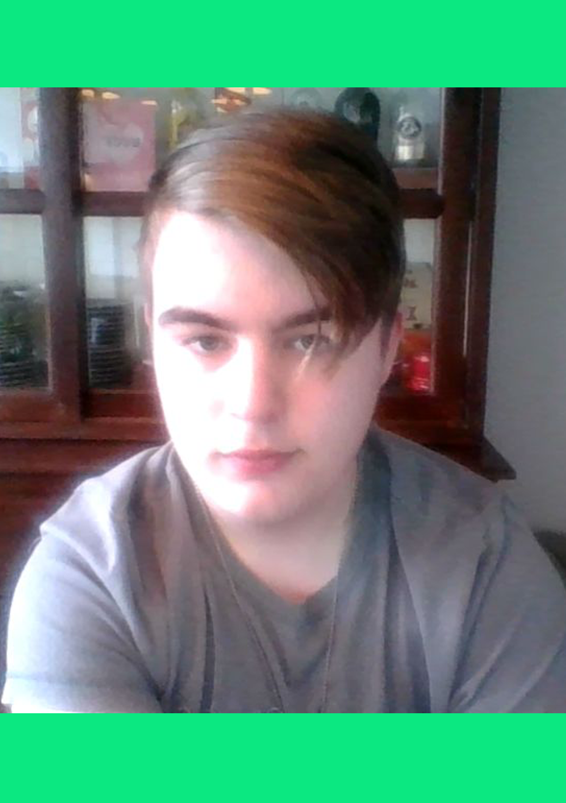

Ik ben Oscar Petersen, ik ben 15 jaar oud en ik woon in Boven-Hardinveld, ik heb een jonger broertje.
Mijn doel is om het mbo te halen, en mijn hobbys zijn gamen, programmeren en tekenen.
De talen die ik al goed kan zijn: HTML, css, JavaScript en PHP.
Ik heb nu 3,5 jaar vmbo op het Uilenhof in Gorinchem gedaan.
Ik heb gewerkt bij: 't eethuis in Schelluinen en ik werk nu bij Dirk van der Broek in Beneden-Hardinxveld.
